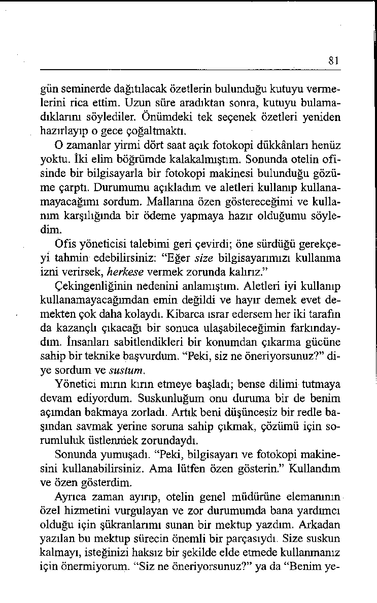
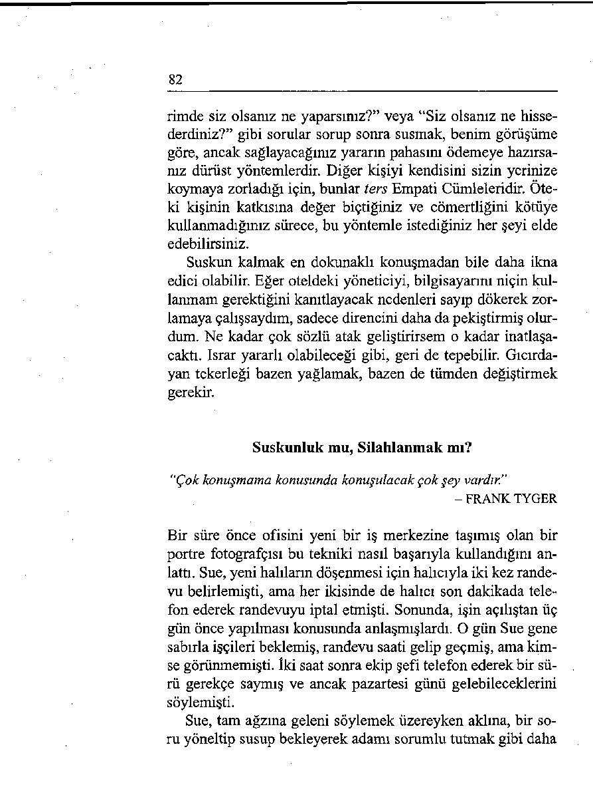
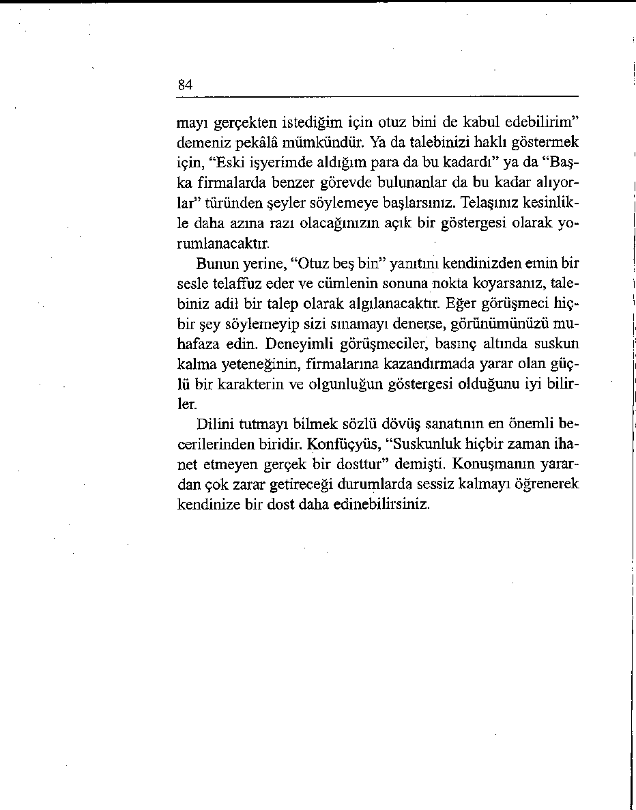

Vermont’da çok tutulan bir tişört belgisi şöyledir: SUSKUN LUĞU İYİLEŞTÎREMEYECEKSEN KONUŞMA! Bilgece
bir tavsiye, değil mi?
Haksızlığa uğradığınızda sessiz kalmak çok zordur. Sanki
karşınızdakini sorumluluktan azade ediyormuşsunuz gibi hissedersiniz. Ama, Henry Ward Beecher’in de dediği gibi, “Öfkeliyken konuşun; bütün zamanlar için pişman olacağınız en iyi konuşmayı yapmış olursunuz.” Bu bölümde, başınızı belaya sokmaması için dilinizi tutmayı öğreneceksiniz.
Zarafet Dilin Kontrol Altında Tutulmasıdır
“S ö z c ü k l e r i a ğ z ı n ız d a y k e n y u t m a k o n la r ı d a h a s o n r a y e m e k te n
d a h a iy id ir .”
- F R A N K L IN D. R OO SEV ELT
79
Roosevelt’den bu alıntıyı yaptığımda seminer katılımcılarından biri gülmekten kırıldı. Bu sözün doğruluğunu zor yoldan öğrenmişti. “Yeni tanıştığım bir kızla ilk çıktığımızda birbirimize hayat hikâyelerimizi anlatırken onunla aynı kentten oldu ğumuz ortaya çıktı. Bana Bayan Waldorf’u tanıyıp tanımadı ğımı sordu. Ben de hiç düşünmeden, ‘O yaşlı kocakarıyı mı
diyorsun? Lisede İngilizce hocamdı’ dedim.
“Derslerinden nefret ettiğimi, onun da sınavda beni çaktırdığını anlattım. Kız arkadaşımın yüzünde gülünç bir ifadenin belirdiğini çok geç fark ettim. Sonunda sözümü bitirdiğimde, ‘Bayan Waldorf benim üvey annemdir’ dedi. Kahretsin! O
noktadan sonra akşam berbat oldu, ikimiz de bir an önce sona
ermesini bekledik.”
Keşke, bu genç adam kız arkadaşıyla çıkmadan önce Oscar
Wilde’ı okumuş olsaydı. Wilde bir kitabında karakterlerinden
birini şöyle tarif eder: “Hiçbir şey söylememek gereken psikolojik anı çok iyi bilirdi.” O nedenle, ağzınızı açmadan önce, söylemek istediğiniz şeyin sonra dönüp hayalet gibi sürekli yanınızda dolaşmasının mümkün olup olmadığını bir düşünün. Dönüp size vurma olasılığı varsa sözünüzü kendinize saklayın.
Diplomatça Bir Yöntem Olarak Suskunluk
“Diplomat hiçbir şey söylemeden önce iki kere düşünen insandır.”
- ANONİM
Düşüncenizi kendinize saklamanın niçin ve ne zaman yerinde
olacağını gösterebilmek için bir iş mülakatı örneğini kullanalım. Görüşmecinin size eski şefinizi beğenip beğenmediğinizi sorduğunu düşünün. Var sayın ki, firmadan ayrılmanızın nedeni de eski şefinizle aranızdaki sürtüşmeydi.
Eski patronunuz hakkında kötü şeyler söylemeniz, bunu ne
80
kadar hak ediyor olursa olsun, sizin için hiç de olumlu bir puan olmayacaktır. Will Durant’ın belirttiği gibi, “Başkaları hakkında kötü konuşmak kendimizi övmenin onursuz bir yoludur.” Mülakatı yapan kişi gözlemlerinizi paylaşsa bile, si/in geveze olduğunuzu düşünecektir. Günün birinde kendisi hakkında da küçük düşürücü benzer şeyler söyleyebileceğinizi akimdan geçirecektir. Bir kilisenin ilan tahtasında asılı bir özdeyişte şöyle deniyordu: “Size dedikodu yapan birisi başkalarına da sizin hakkınızda dedikodu yapacaktır.”
Bu durumda sessiz kalmak mertliğin daha iyi bir yanıdır.
Mertlik, kişinin tehlikeyi metanetle karşılamasını mümkün kalan zihinsel ya da manevi güç olarak tanımlanmaktadır. Ciddi olun. Kötü konuşma dürtüsüne boyun eğmeyi reddedin. Eski işvereninizi aşağıladığınız için kimse size saygı duyacak de ğildir. Bir şey söylemek istiyorsanız, bunu yapıcı bir şekilde
ifade edin. Her şeyi, “Kendisinden çok şey öğrendim” diye
özetleyebilirsiniz. Bu ifadenin doğruluğu kuşku götürmez ve
duygularınızı dile getirmenin çok daha zarif bir yoludur.
Suskun Kalın
“Suskunluk güç kaynağıdır.”
- TONGUE FU DÜŞÜNCESİ
Suskun kalmanın bir başka yararını daha görmek ister misiniz?
Eğer birisi söylediklerinize direniyorsa, kısa bir aradan
sonra kendisine, “Peki, siz ne öneriyorsunuz?” sorusunu yöneltmek, o kişiyi önerinizi dikkate almaya ikna etmenin mükemmel bir yoludur.
Yıllarca önce Los Angeles’deki Kaliforniya Üniversitesi
benden yoğunlaşma konusunda bir atölye çalışması örgütlememi talep etmişti. Programdan bir gün önce otele indim ve personelden önceden gelmiş olması gereken ve içinde ertesi 
81
gün seminerde dağıtılacak özetlerin bulunduğu kutuyu vermelerini rica ettim. Uzun süre aradıktan sonra, kutuyu bulamadıklarını söylediler. Önümdeki tek seçenek özetleri yeniden hazırlayıp o gece çoğaltmaktı.
O zamanlar yirmi dört saat açık fotokopi dükkânları henüz
yoktu, iki elim böğrümde kalakalmıştım. Sonunda otelin ofisinde bir bilgisayarla bir fotokopi makinesi bulunduğu gözüme çarptı. Durumumu açıkladım ve aletleri kullanıp kullanamayacağımı sordum. Mallarına özen göstereceğimi ve kullanım karşılığında bir ödeme yapmaya hazır olduğumu söyledim.
Ofis yöneticisi talebimi geri çevirdi; öne sürdüğü gerekçeyi tahmin edebilirsiniz: “Eğer size bilgisayarımızı kullanma izni verirsek, herkese vermek zorunda kalırız.”
Çekingenliğinin nedenini anlamıştım. Aletleri iyi kullanıp
kullanamayacağımdan emin değildi ve hayır demek evet demekten çok daha kolaydı. Kibarca ısrar edersem her iki tarafın da kazançlı çıkacağı bir sonuca ulaşabileceğimin farkmday-dım. İnsanları sabitlendikleri bir konumdan çıkarma gücüne sahip bir teknike başvurdum. “Peki, siz ne öneriyorsunuz?” diye sordum ve sustum.
Yönetici mırın kırın etmeye başladı; bense dilimi tutmaya
devam ediyordum. Suskunluğum onu duruma bir de benim
açımdan bakmaya zorladı. Artık beni düşüncesiz bir redle ba şından savmak yerine soruna sahip çıkmak, çözümü için sorumluluk üstlenmek zorundaydı.
Sonunda yumuşadı. “Peki, bilgisayarı ve fotokopi makinesini kullanabilirsiniz. Ama lütfen özen gösterin.” Kullandım ve özen gösterdim.
Ayrıca zaman ayırıp, otelin genel müdürüne elemanının
özel hizmetini vurgulayan ve zor durumumda bana yardımcı
olduğu için şükranlarımı sunan bir mektup yazdım. Arkadan
yazılan bu mektup sürecin önemli bir parçasıydı. Size suskun
kalmayı, isteğinizi haksız bir şekilde elde etmede kullanmanız
için önermiyorum. “Siz ne öneriyorsunuz?” ya da “Benim ye 
82
rimde siz olsanız ne yaparsınız?” veya “Siz olsanız ne hissederdiniz?” gibi sorular sorup sonra susmak, benim görüşüme göre, ancak sağlayacağınız yararın pahasını ödemeye hazırsanız dürüst yöntemlerdir. Diğer kişiyi kendisini sizin yerinize koymaya zorladığı için, bunlar ters Empati Cümleleridir. Öteki kişinin katkısına değer biçtiğiniz ve cömertliğini kötüye kullanmadığınız sürece, bu yöntemle istediğiniz her şeyi elde edebilirsiniz.
Suskun kalmak en dokunaklı konuşmadan bile daha ikna
edici olabilir. Eğer oteldeki yöneticiyi, bilgisayarını niçin kullanmam gerektiğini kanıtlayacak nedenleri sayıp dökerek zorlamaya çalışsaydım, sadece direncini daha da pekiştirmiş olurdum. Ne kadar çok sözlü atak geliştirirsem o kadar matlaşacaktı. Israr yararlı olabileceği gibi, geri de tepebilir. Gıcırdayan tekerleği bazen yağlamak, bazen de tümden değiştirmek gerekir.
Suskunluk mu, Silahlanmak mı?
"Çok konuşmama konusunda konuşulacak çok şey vardır.”
- FRANK TYGER
Bir süre önce ofisini yeni bir iş merkezine taşımış olan bir
portre fotoğrafçısı bu tekniki nasıl başarıyla kullandığını anlattı. Sue, yeni halıların döşenmesi için halıcıyla iki kez randevu belirlemişti, ama her ikisinde de halıcı son dakikada telefon ederek randevuyu iptal etmişti. Sonunda, işin açılıştan üç gün önce yapılması konusunda anlaşmışlardı. O gün Sue gene sabırla işçileri beklemiş, randevu saati gelip geçmiş, ama kimse görünmemişti. İki saat sonra ekip şefi telefon ederek bir sürü gerekçe saymış ve ancak pazartesi günü gelebileceklerini söylemişti.
Sue, tam ağzına geleni söylemek üzereyken aklına, bir soru yöneltip susup bekleyerek adamı sorumlu tutmak gibi daha
83
iyi bir yol gelmiş. Soğukkanlılığını yitirmeden ama kararlı bir
ses tonuyla yeni bir gecikmenin kabul edilemeyeceğini belirttikten sonra, sormuş: “Ben sizin üç kere randevunuzu iptal etmiş olsaydım kendinizi nasıl hissederdiniz?” ve susup beklemeye başlamış.
Usta, yeni bir gecikmenin kabul edilmesinin mümkün olmadığını anlamaya başlamış olsa da, gene gerekçelerini tekrarlamaya çalışmış. Bu kez Sue şunu sormuş: “Pazartesi için yedi foto randevum varken, ne yapmamı önerirsiniz?” Bu tür sorulan kibarca sürdürüp ardından suskun kalarak sonunda
ustayı işi o gün tamamlamayı kabul etmek zorunda bırakmış.
Sue, “Tongue Fu’dan önce bu noktaya baskı uygulamaya
çekinirdim” dedi, “geri adım atar, ertelemeyi kabul eder ve gene kendimi feda etmiş olurdum. Atölye çalışması, ses boşlu ğunu hemen doldurmaya çalışmak yerine bundan rahatsız olmamayı bana Öğretti. Sonuç olarak, artık insanların yakasını hemen bırakmıyor, yumuşak başlılığımdan yararlanmalanna izin vermiyorum.”
Suskunluğa Ne Zaman Başvurmalı?
"Suskunluk çürütülmesi en güç kanıtlardan biridir."
- ANONİM
Uzun bir sessizlik arasından rahatsız olmamak özellikle müzakerelerde önemlidir. Gene bir iş mülakatında olduğunuzu ve size ne kadar ücret talep ettiğinizin sorulduğunu var sayın. Hemen, deneme kabilinden “Otuz beş bin dolar olur mu?” derseniz, karşınızdaki pazarlıkla bunu daha aşağı indirmenin mümkün olduğunu anlayacaktır. Susup, size hiçbir cevap vermeden “Şaka mı yapıyorsun?” der gibi kaşlannı yukarı kaldırıp bekleyecektir.
Bu tepki karşısında gerileyip zayıf bir sesle, “Burada çalış 
84
mayı gerçekten istediğim için otuz bini de kabul edebilirim”
demeniz pekâlâ mümkündür. Ya da talebinizi haklı göstermek
için, “Eski işyerimde aldığım para da bu kadardı” ya da “Başka firmalarda benzer görevde bulunanlar da bu kadar alıyorlar” türünden şeyler söylemeye başlarsınız. Telaşınız kesinlikle daha azma razı olacağınızın açık bir göstergesi olarak yorumlanacaktır.
Bunun yerine, “Otuz beş bin” yanıtını kendinizden emin bir
sesle telaffuz eder ve cümlenin sonuna nokta koyarsanız, talebiniz adil bir talep olarak algılanacaktır. Eğer görüşmeci hiçbir şey söylemeyip sizi sınamayı denerse, görünümünüzü muhafaza edin. Deneyimli görüşmeciler, basınç altında suskun kalma yeteneğinin, firmalarına kazandırmada yarar olan güçlü bir karakterin ve olgunluğun göstergesi olduğunu iyi bilirler.
Dilini tutmayı bilmek sözlü dövüş sanatının en önemli becerilerinden biridir. Konfüçyüs, “Suskunluk hiçbir zaman ihanet etmeyen gerçek bir dosttur” demişti. Konuşmanın yarardan çok zarar getireceği durumlarda sessiz kalmayı öğrenerek kendinize bir dost daha edinebilirsiniz.
85
DİLİNİZİ TUTMAK İÇİN EYLEM PLANI
Bir yüzme havuzu inşaatı için fon bulmaya çalışan bir semt deme ğinin üyesisiniz. Aylık toplantıya katılıyorsunuz. Yönetim kurulu
üyeleri başkanın eylemsizliğinden şikâyetçi oluyorlar. Başkanın
performans eksikliğinin tartışılması kişiselleşiyor, bazı katılımcılar
başkanın iflas etmek üzere olduğuna ve boşanacağına ilişkin kulaktan dolma bilgileri gündeme getiriyorlar. Size başkan hakkındaki görüşünüz soruluyor. Ne yaparsınız?
UNUTMANIZ GEREKEN
KULLANMANIZ
SÖZLER
GEREKEN SÖZLER
Söyleyeceklerinizin kişiyi inciileride pişman olacağınız bir
tip incitmeyeceğini düşünme şey söylememek için konuşmaden konuşursunuz.
dan önce düşünürsünüz.
‘‘S an ıyoru m bu p r o je y le h iç il
“G ö rü şü m ü b e lir tm e m in b ir
g ilen m iyor. Ç o k za m a n k a y b e ty a r a r ı o la c a k m ı? ”
tik.’’
Dedikoduları onaylayarak ken Dürüst davranmayı ve kötü
di olumsuz katkınızı yaparsısözler sarf etmemeyi tercih
nız.
edersiniz.
"K arısının üç ço cu ğ u n u v e kö
“Su sm alıyım . B u konuda b ir
p e ğ i a la r a k e v i te r k e ttiğ in i
ile rle m e s a ğ la y a m a m ış o lm a sıd u yd u m .”
nın n ed e n le rin e ilişkin b irin ci
eld en b ilg i s a h ib i d e ğ ilim .”
Hakkında, yann dönüp hayalet
Tartışmayı daha yapıcı bir kogibi yanınızda dolaşacak beş
nuya kaydırabilir ve grubun
para etmez kötü şeyler söylerdikkatini gündemdeki bir başsiniz.
ka soruna çekebilirsiniz.
‘‘G ü ven ilm ez b ir adam dır. K a
“S a d e c e y a r ım sa a tim iz kaldı.
rıs ı o n d a n e bulm uş, h iç b ir z a
İstersen iz, b ir so n ra k i n oktayı
m an a n la m a d ım .”
ta rtışm a y a b a şla y a lım .”
“Söylememiş olduğum bir şeyin zararını
daha hiç görmedim.”
- CALVIN COOLIDGE
Sekizinci Bölüm
Ne Söyleyeceğinizi Bilmediğinizde
Ne Söylemelisiniz?
Üzerinde oturduğunuz söz sandalyesini birisi aniden altınızdan çekiverse ne söylemeniz gerektiğini biliyor musunuz?
Birinci olarak, birisi yaralayıcı bir sözle kafanızı allak bullak ettiğinde ne söylememek gerektiğini bilmeniz çok önemlidir. “Bu doğru değil” türünden şeyler söyleyerek kendinizi savunmaya ya da olumsuz açıklamayı, “Bunu kabul etmiyorum”
türünden bir yalanlamayla reddetmeye çalışmayın.
Niçin? Birisi size beklenmedik bir sözlü darbe indirdiğinde
siz infial içinde bunu reddederek karşı saldırıya geçerseniz,
zokayı yutmuşsunuz demektir. Eğer birisi, “Niçin hep savunmadasın?” derse ve siz de, “Hayır, hiç de savunmada değilim/”
diye karşılık verirseniz, sadece onun açıklamasını pekiştirmiş
olursunuz. Eğer birisi bir bayanı aşırı duygusal olmakla itham
ediyor ve o da “Ben duygusal değilim” diye itiraz ediyorsa, ister istemez iddiayı kanıtlamış olur.
87